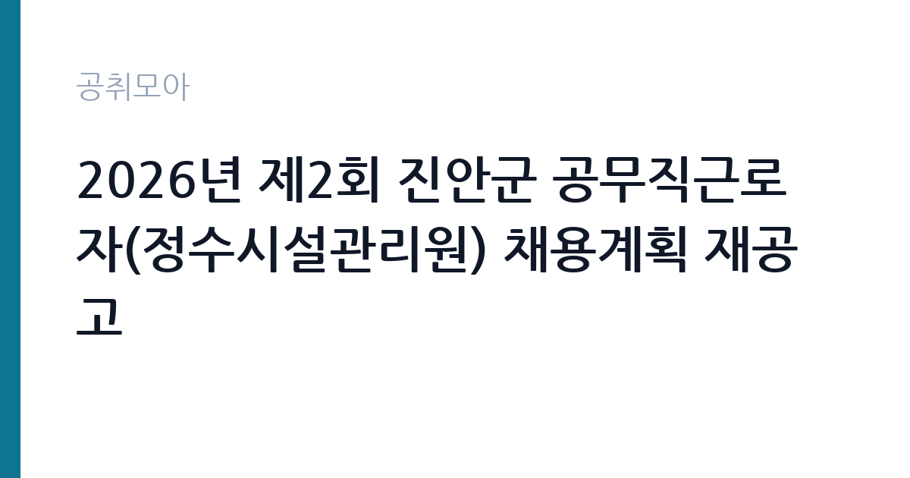

[지자체] 2026년 제2회 진안군 공무직근로자(정수시설관리원) 채용계획 재공고
전북특별자치도 진안군 · 전북 · 마감 2026-09-30 (D-6) · 출처 나라일터

한눈에 보는 모집 조건
| 기관 | 전북특별자치도 진안군 |
|---|---|
| 공고명 | 2026년 제2회 진안군 공무직근로자(정수시설관리원) 채용계획 재공고 |
| 고용형태 | 공무직 |
| 근무지 | 전북 |
| 게시일 | 2026-09-23 |
| 마감일 | 2026-09-30 (D-6) |
지원자격, 이렇게 읽으세요
- 정수시설관리원 1명
- 접수 ~2026-09-30 마감
- 세부 조건은 원문 공고문 확인
정수시설관리원은 현장 기능직 성격이 강해 학력보다 관련 경력과 자격, 신체 조건을 중시합니다. 정수시설운영관리사 자격증이나 상수도, 환경, 기계, 전기 분야 경력이 있으면 유리합니다. 정확한 응시 자격과 우대 조건, 가산점 기준은 원문 공고문의 붙임 파일에서 확인하셔야 합니다. 공무직 채용에서는 거주지 제한을 두는 경우가 많으니 진안군 거주 요건이 있는지 확인하시기 바랍니다. 운전면허나 관련 자격증 사본, 경력증명서를 미리 준비해 두시기 바랍니다.
이 공고의 포인트
이 공고의 포인트는 세 가지입니다. 첫째, 공무직이라는 신분입니다. 계약직과 달리 고용이 안정적이고 정년까지 근무할 수 있어 중장기 생애 설계가 가능합니다. 둘째, 재공고라 경쟁이 완화됐을 가능성이 있습니다. 1차에서 인원을 채우지 못했다는 뜻이므로 조건을 갖춘 분께는 합격 문이 넓습니다. 셋째, 실무형 직무라 경력자가 유리합니다. 정수장이나 상수도, 환경시설 경력이 있다면 서류와 면접에서 앞서나갈 수 있습니다. 다만 접수 기간이 3일에 불과하므로 결심이 섰다면 바로 움직이시기 바랍니다.
전형은 어떻게 진행되나
전형은 보통 서류전형과 면접시험으로 진행됩니다. 서류에서는 응시자격 적격 여부와 관련 경력을 심사하고, 면접에서는 직무 이해도와 현장 대처 능력을 평가합니다. 체력검정이나 실기시험이 포함될 수 있으니 원문 공고문의 시험 방법을 확인하시기 바랍니다. 접수 기간이 9월 28일부터 9월 30일까지 3일간이며 방문 접수만 가능합니다. 우편과 대리 접수를 받지 않으므로 본인이 직접 진안군청 접수처를 방문해야 합니다. 접수 첫날 방문을 권장합니다.
원문에서 확인한 전형 방식
2026년 제2회 진안군 공무직근로자 채용계획을 다음과 같이 재공고합니다. 가. 공고기간 : 2026. 9. 23.(수) ~ 2026. 9. 30.(수) / 7일간 나. 원서접수 : 2026. 9. 28.(월) ~ 2029. 9. 30.(수) / 3일간 다. 접수방법 : 방문접수(우편, 대리접수 불가) 라. 응시자격 및 기준 등 : [붙임] 참고 마. 문의사항 : 063-430-2234 (진안군청 행정지원과 행정팀)
이런 분께 추천해요
- 정수장이나 상수도, 환경시설 운영 경력을 보유한 분께 추천합니다.
- 정년 보장되는 안정적인 현장 일자리를 찾는 분께 잘 맞습니다.
- 진안군에 거주하시거나 근무가 가능한 분께 좋은 기회입니다.
지원 전 체크리스트
- 원문 공고문 붙임 파일에서 응시자격과 거주 요건을 확인했습니다.
- 관련 자격증 사본과 경력증명서를 빠짐없이 준비했습니다.
- 방문 접수 장소와 시간을 확인하고 접수 기간 안에 방문했습니다.
- 정수처리 공정과 수질관리 기초를 정리해 면접을 대비했습니다.
모집 일정과 제출 타이밍
공고 기간은 2026년 9월 23일부터 9월 30일까지 7일간이며, 원서 접수는 9월 28일부터 9월 30일까지 3일간입니다. 접수 첫날과 마감일에는 방문자가 몰릴 수 있으니 일정을 조율해 방문하시기 바랍니다. 서류 합격자 발표와 면접 일정은 원문 공고문에 안내되어 있습니다. 면접까지 기간이 짧을 수 있으니 접수와 동시에 면접 준비를 시작하시기 바랍니다. 임용 시기와 근무 부서도 공고문에 명시되어 있으니 지원 전에 확인하시기 바랍니다.
직무 이해하기: 지자체
정수시설관리원은 정수장에서 원수를 취수해 침전과 여과, 소독 과정을 거쳐 수돗물을 생산하는 시설을 운영합니다. 설비 점검과 약품 투입 관리, 수질 검사 보조, 시설 청소와 유지보수가 일상 업무입니다. 수질 사고나 설비 고장 같은 비상 상황에 대응하는 것도 중요한 역할입니다. 교대근무가 포함될 수 있어 야간과 휴일 근무가 가능한 체력이 필요합니다. 군민이 마시는 물을 책임지는 자리라 안전 의식과 책임감이 무엇보다 중요합니다.
자기소개서 작성 팁
공무직 현장직 자기소개서는 관련 경험과 성실성을 보여주는 것이 핵심입니다. 정수장이나 상수도, 환경, 기계, 전기 분야에서 다뤄본 설비와 업무를 구체적으로 쓰시기 바랍니다. 안전사고를 예방했던 경험이나 설비 고장을 해결했던 사례가 있다면 반드시 넣으시기 바랍니다. 자격증 취득 과정도 좋은 소재입니다. 진안군에 지원한 이유와 장기 근속 의지를 명확히 밝히시면 좋은 평가를 받습니다.
면접 준비 포인트
면접에서는 직무 이해도와 현장 대처 능력을 중점적으로 봅니다. 정수처리 공정의 기본 흐름인 취수와 혼화, 응집, 침전, 여과, 소독을 숙지해 가시기 바랍니다. 수질 이상이나 설비 고장 같은 비상 상황 질문에는 안전 매뉴얼에 따른 단계별 대처를 답하시기 바랍니다. 교대와 야간, 휴일 근무 가능 여부를 묻는다면 명확하게 가능하다고 답하시기 바랍니다. 안전 관련 질문에는 산업안전 수칙 준수와 청렴한 자세를 단호하게 밝히시기 바랍니다.
급여·근무조건 읽는 법
공무직의 보수는 지자체의 공무직 임금 협약과 보수 규정에 따라 정해집니다. 기본급에 각종 수당이 더해지며, 생활임금이나 최저임금 인상분이 반영되는 구조가 일반적입니다. 정확한 월 보수액과 수당 항목, 상여금 지급 기준은 원문 공고문 붙임 파일에서 확인하셔야 합니다. 공무직은 4대 보험과 퇴직금이 적용되고, 근속에 따라 임금이 오르는 경우가 많습니다. 야간과 휴일 근무가 있으면 수당이 붙습니다. 실수령액은 세금과 보험료를 제외한 금액이므로 세전 급여와 구분해서 계산하시기 바랍니다. 경쟁률과 합격선은 공개되지 않았습니다.
자주 묻는 질문
- 공무직과 계약직의 차이가 무엇입니까?
공무직은 기간 정함 없는 근로계약을 쓰는 경우가 많아 정년까지 안정적으로 근무할 수 있습니다. 계약직처럼 계약 만료로 고용이 끝나는 구조가 아니라는 점이 가장 큰 차이입니다. - 꼭 방문 접수해야 합니까?
이번 모집은 방문 접수만 가능하며 우편과 대리 접수를 받지 않습니다. 본인이 직접 접수처를 방문해야 하니 접수 장소와 시간을 미리 확인하시기 바랍니다. - 관련 자격증이 없어도 지원할 수 있습니까?
응시자격만 충족하면 지원할 수 있습니다. 다만 정수시설운영관리사 같은 관련 자격증은 우대나 가산점으로 반영될 수 있으니 원문 공고문에서 확인하시기 바랍니다.
함께 보면 좋은 공고
[지자체] 2026년도 제1회 해남군 시간선택제임기제공무원 경력경쟁채용시험 시행계획 재공고 — 마감 2026-10-08[지자체] 2026년 제1회 함안군의회 임기제공무원(정책지원관) 채용 공고 — 마감 2026-10-07[지자체] 2026년 제4회 진주시 임기제공무원 임용시험 계획 재공고 — 마감 2026-10-08출처: 나라일터 공개정보를 바탕으로 공취모아가 정리한 안내글입니다. 모집 조건·일정은 변경될 수 있으니 지원 전 반드시 원문 공고문을 확인하세요. 본 글은 정보 제공용이며 합격을 보장하지 않습니다.